Lipids & Liver Research Group
Department of Physiology | Faculty of Medicine and Nursing | University of the Basque Country (UPV/EHU) & Biocruces Bizkaia Health Research Institute.

Presentation
Faculty of Medicine and Nursing • Leioa CampusWe carry out our research activity in the Department of Physiology at the Faculty of Medicine and Nursing (UPV/EHU). Alongside cutting-edge scientific research, we actively contribute to higher education and the training of new research personnel in the biomedical field.
The team has been continuously accredited as a “Consolidated Group” by the Department of Education of the Basque Government since 2007.
Staff Composition
- 10 Teaching and Research Staff (PDI)
- 1 Ikerbasque Researcher
- 6 Predoctoral Research Fellows
- 2 Postdoctoral Researchers
- 2 Technical Support Staff
Aiming to promote translational research with clinical impact, the group is integrated into the Biocruces Bizkaia Health Research Institute, connecting laboratory molecular analysis with clinical care for human liver diseases.
Our activity is aligned with the “Health and Quality of Life” strategic priority of the Ministry of Science and Innovation and within the “Healthy Aging” framework of Euskampus.
The Lipids & Liver group has pioneered the creation and consolidation of the Lipidomics Unit of the General Research Services (SGIker) at the UPV/EHU.
This technological platform provides mass spectrometry analytical capabilities to serve regional, national, and international research groups.
The Lipids & Liver research group benefits from dedicated scientific and experimental infrastructure, strategically situated across the Leioa Campus of the University of the Basque Country (UPV/EHU) to support academic education, predoctoral/postdoctoral training, and cutting-edge biomedical research:
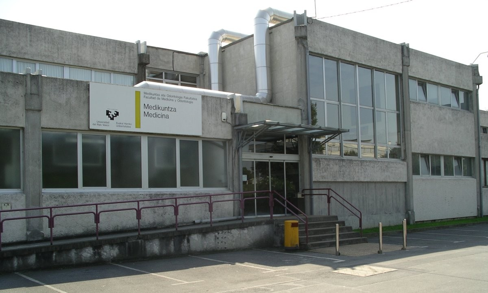
Laboratories at the Faculty of Medicine and Nursing
Dept. of Physiology • 2nd Floor (Leioa Campus)Main hub for cellular and metabolic biomedical experimentation, undergraduate and graduate teaching, and doctoral thesis development.
- Physiology & Liver Biochemistry Labs: Fully equipped spaces for metabolic studies, enzymatic assays, and molecular profiling (Laboratory 2.16 and adjacent areas).
- Cell Culture & Molecular Biology: Clean rooms with laminar flow cabinets and incubators for cell line maintenance and in vitro hepatic pathology models.
- Academic & Research Workspaces: Faculty and investigator offices alongside workstations for predoctoral and postdoctoral researchers.
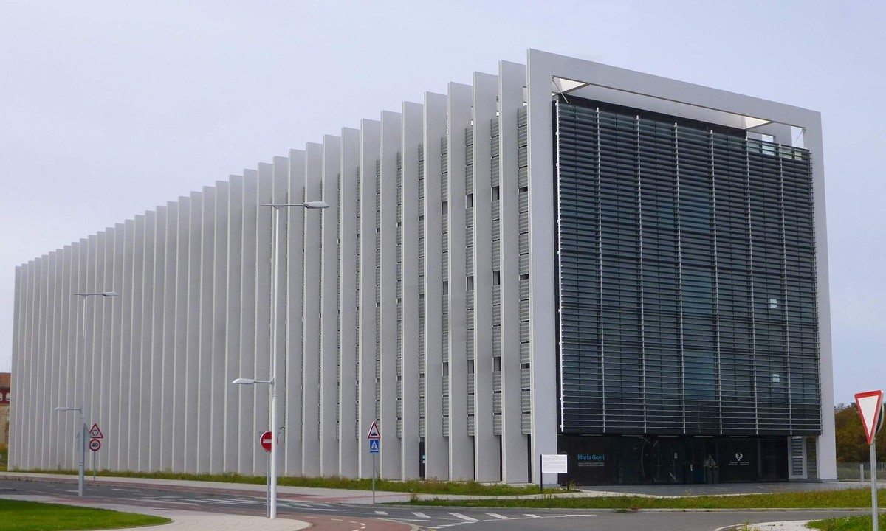
Facilities at the María Goyri Building
UPV/EHU Science Park (Leioa Campus)State-of-the-art multidisciplinary research center integrating high-throughput biomedical technology platforms and cross-sector innovation initiatives.
- Technology Platforms & SGIker: Seamless integration and close collaboration with the SGIker Lipidomics Unit.
- Advanced Mass Spectrometry: Access to high-resolution mass spectrometry instrumentation for lipidomic, metabolomic, and biophysical profiling.
- Biomedical Scientific Ecosystem: Direct synergy with leading institutes in the UPV/EHU Science Park and the Biocruces Bizkaia network.
Research Lines
Active scientific research projects of the group
Metabolic Dysfunction-Associated Fatty Liver Disease (MAFLD/NASH)
Molecular mechanisms of lipotoxicity, endoplasmic reticulum stress, and progression to fibrotic steatohepatitis.
View Research Line
Cáncer Hepático: Carcinoma Hepatocelular, Colangiocarcinoma y Metástasis Colorrectal
Análisis de la reprogramación metabólica energética y lipídica en el microambiente tumoral hepático.
View Research Line
Mecanismos de Daño Hepático y Factores de Transcripción E2Fs
Papel del estrés oxidativo, desregulación de lípidos y factores E2F en el daño hepático farmacológico (DILI) y regeneración.
View Research Line
Lipidómica e Integración Computacional (SGIker UPV/EHU)
Desarrollo metodológico de espectrometría de masas y modelos de Deep Learning para el procesamiento de lipidomas clínicos.
View Research Line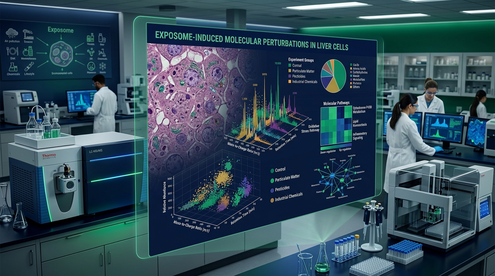
Exposoma Ambiental y Compuestos Disruptores Metabólicos (MDCs)
Identificación por proteómica de adductos y dianas en hepatocitos expuestos a contaminantes ambientales que alteran el metabolismo.
View Research Line
Spatial Omics and Cellular-Resolution Multi-Omics
High-resolution spatial mapping of metabolic zonation, tumor microenvironment, and in situ lipidomics in hepatic disease.
View Research LineResearch & Teaching Faculty
Group members and research line leaders
Prof. Patricia Aspichueta Celaá
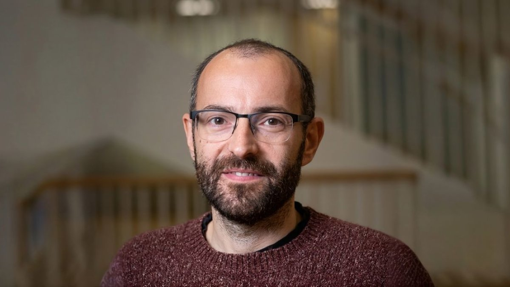
Dr. Juan Luis García Rodríguez
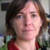
Dra. M. Olatz Fresnedo Aranguren
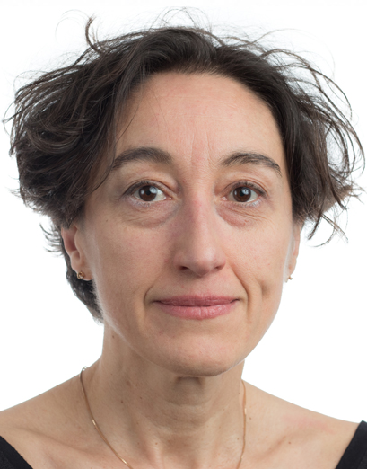
Dra. Susana Cristobal
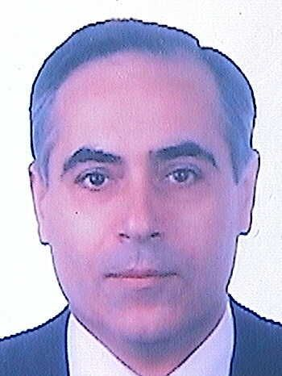
Dr. Andrés Valdivieso López
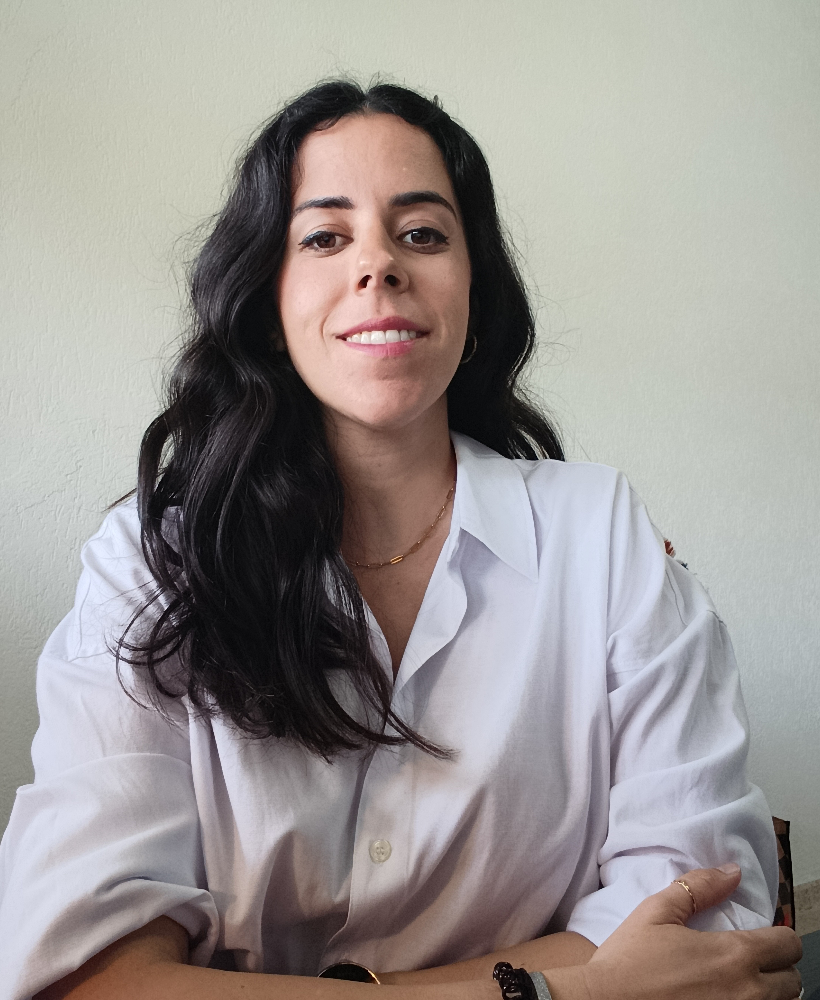
Dra. Beatriz Gómez Santos
Dr. Xabier Buqué García
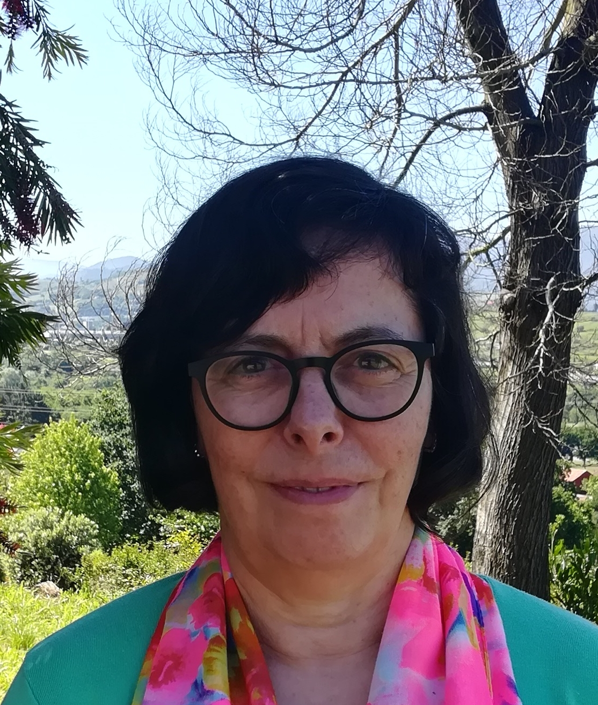
Dra. Yolanda Chico
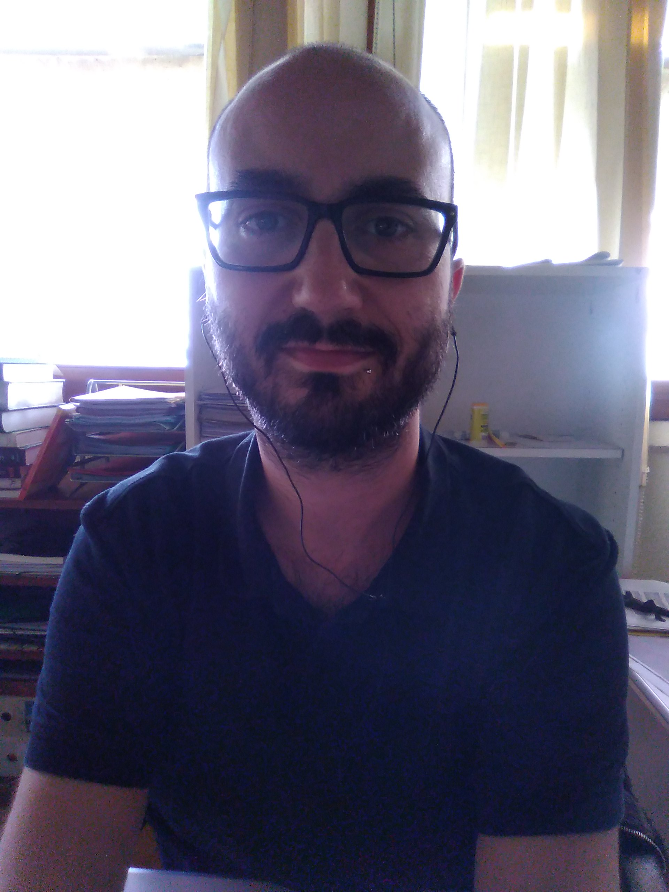
Dr Yuri Rueda Estévez
Dr. Francisco González Romero
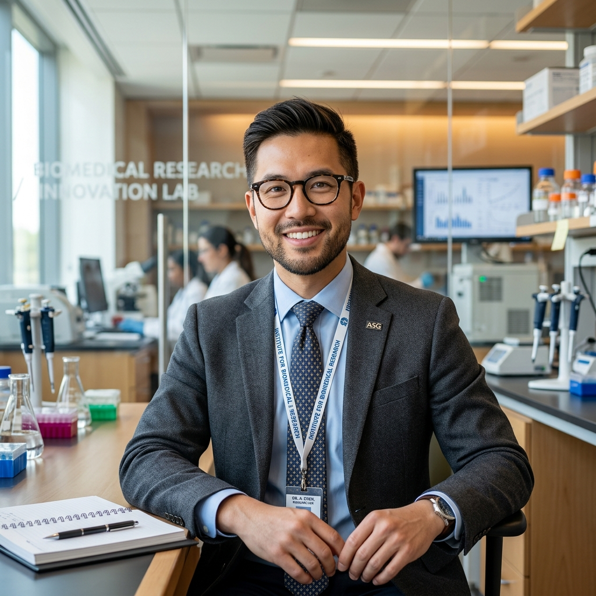
Dr. Diego Sáenz de Urturi
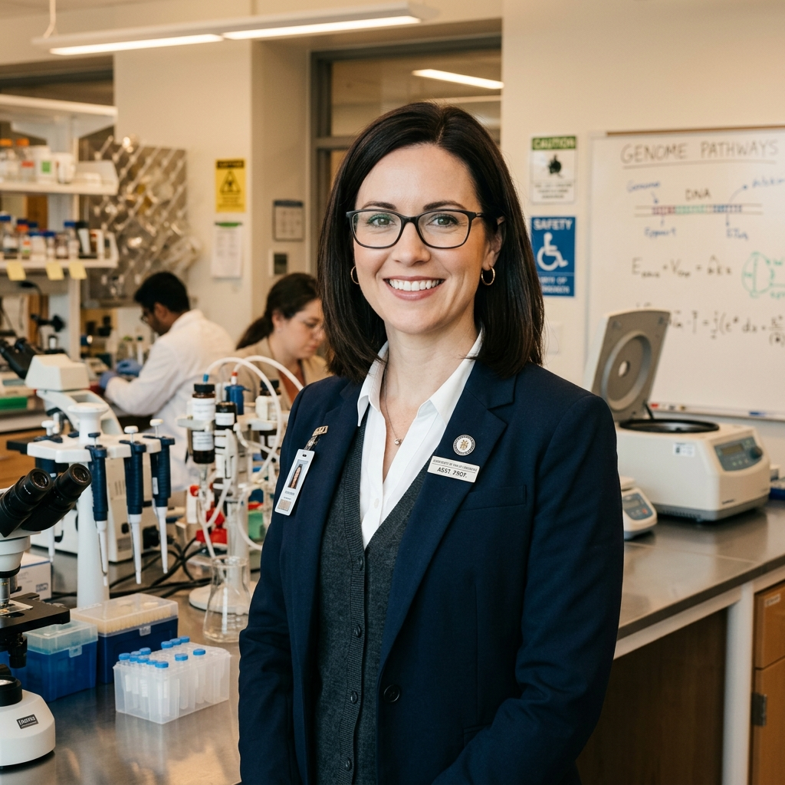
Maider Apodaka Biguri

Enara Markaide Garcia
Mikel Ruiz de Gauna Madariaga
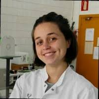
Ane Nieva Zuluaga
Idoia Fernández Puertas
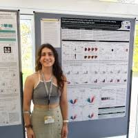
Natalia Sainz
Paul Gómez Jáuregui
Ane Ortiz Palma
Kendall Alonso Alfaro Jiménez
Jose Antonio López Gómez
Carlos Ceniceros Rodríguez
PhD Theses: Ongoing and Completed
Doctoral research projects supervised at UPV/EHUEnara Markaide Garcia
Natalia Sainz
Maider Apodaka Biguri
Mikel Ruiz de Gauna Madariaga
Idoia Fernández Puertas
Ane Nieva Zuluaga
Dr. Francisco González Romero
Dra. Teresa Caro Ordieres
Dra. Daniela Constanza Mestre Congregado
Dr. Diego Sáenz de Urturi Indart
Dr. Jorge Simón Espinosa
Dra. Beatriz Gómez Santos
Dra. Hiart Navarro Imaz
Dra. Larraitz Fernández Ares
Latest Scientific Publications
Recent articles in high-impact international scientific journals (JCR)Alcohol consumption in metabolic dysfunction-associated steatotic liver disease (MASLD): understanding the gut-liver crosstalk for clinical translation.
2026Resumen / Abstract
ObjectiveIn the present study, we investigated the role of the gut-liver crosstalk in the pathogenesis of steatotic liver disease (SLD) induced by the compounding and deleterious effects of alcohol and metabolic risk factors, and explored the potential translational aspects of microbiome-based interventions.DesignThe effects of combined exposure to alcohol and a high-fat, high-cholesterol diet (HFHC) Western diet (WD) were tested in a dietary mouse DUAL model and compared to mice fed only with WD. Liver and gut phenotypes were evaluated via histochemistry, flow cytometry, gene expression, proteomic, and metabolomic analyses. The effects on the gut microbiota were studied in both DUAL mice and MASLD patients with a history of alcohol consumption. Antibiotic-induced microbiota depletion (AIMD) and microbiota modulation therapies (probiotics and fecal microbiota transplant (FMT)) were performed in mice. Primary human hepatocytes and HepG2 cells were used to study the underlying mechanisms. Zebrafish larvae exposed to alcohol and a HFHC diet were used as a validation model.ResultsAlcohol in combination with WD synergistically exacerbated SLD. DUAL-diet-induced disruption of the intestinal barrier led to LPS leakage into the bloodstream and subsequent TLR4-mediated hepatic inflammation. This, together with enhanced intestinal fat absorption, and impaired intrahepatic lipid oxidation - particularly due to insufficient CPT-1 activity - contributed to prominent steatohepatitis. The DUAL-induced changes in the gut microbiota showed similarities to human dysbiosis in MASLD patients who consumed alcohol, including an increase in Bacteroides and Alistipes. AIMD improved pathology, indicating a causal role of the microbiota in the pathophysiology of DUAL steatohepatitis, whilst early microbiome modulation via FMT induced mild improvements in liver and gut physiology.ConclusionsThese results indicated that the microbiota‒gut‒liver axis plays a crucial role in the progression of SLD intensified by alcohol and concurrent metabolic risk factors, thus providing a promising translational target for potential therapeutic interventions.
Lipidomics uncovers metabolic manifestations related to liver steatosis and low-grade systemic inflammation in diet-treated hereditary fructose intolerance patients.
2026Resumen / Abstract
Background and aimsHereditary Fructose Intolerance (HFI), a rare autosomal recessive metabolic disorder, has historically been considered benign when treated with a lifelong fructose-, sucrose and sorbitol-restricted diet. However, adverse metabolic manifestations have recently been reported in treated HFI patients. As serum metabolomics offers a valuable tool for assessing metabolic manifestations underlying inherited metabolic disorders, we aim to compare the serum lipidomic profile of HFI-treated patients with age-, gender-, and body mass index-matched healthy controls.MethodsLong-term dietary-treated HFI patients (n = 32) were compared to age-, sex-, and BMI-matched healthy controls (n = 28) using serum lipidomic analysis by tandem mass spectrometry, followed by pathway enrichment analysis. Furthermore, liver magnetic resonance imaging/spectroscopy (MRI/MRS), plasma lipoprotein and glycoprotein profiling using the LiposcaleⓇ, a two-dimensional proton nuclear magnetic resonance (2D-1H NMR) spectroscopy test, sialotransferrin analysis, and serum multiplex analysis of cytokines/chemokines were performed.ResultsThe HFI patients exhibited a distinct serum lipidomic profile showing separate clusters in the multivariate analysis between these patients and the healthy controls. Top-interacting network analysis revealed abnormalities in lipid metabolism and inflammation as hallmarks of HFI. Indeed, significant liver steatosis, assessed by MRS proton density fat fraction (MRS-PDFF), was present in 75 % of HFI patients compared to 7 % in the control group. Moreover, low-grade systemic inflammation was highly prevalent in HFI patients, exhibiting elevated serum cytokines, C-reactive protein, acute phase proteins such as fibrinogen and ferritin, and increased low-grade inflammation score. Additionally, circulating glycoprotein acetyls (GlycA), a novel serum marker for low-grade inflammation, was significantly elevated in the HFI patients and associated with their lipidomic profile and markers of altered intestinal permeability, such as serum lipopolysaccharide binding protein. Furthermore, increased GlycA concentration in the HFI patients was associated with elevation of blood pressure and an altered serum lipoprotein profile, early factors of cardiovascular risk.ConclusionsSerum lipidomic study revealed previously unknown metabolic complications of HFI-treated patients. Notably, we have found that low-grade systemic inflammation is highly prevalent in the cohort of HFI patients and correlates with early factors of cardiovascular risk. Expanding our current understanding of the metabolic consequences in HFI-treated patients will provide the best care for patients.
Statins halt polycystic liver disease by reprogramming metabolism and normalizing mitochondrial bioenergetics in cystic cholangiocytes.
2026Resumen / Abstract
Background and aimPolycystic liver disease (PLD) is a hereditary disorder characterized by the progressive development and enlargement of intrahepatic biliary cysts, which can lead to significant morbidity. Liver transplantation remains the only curative treatment. Mutations in endoplasmic reticulum (ER)-related genes contribute to ER stress in cystic cholangiocytes, promoting disease progression. Given the functional interplay between ER and mitochondria, we investigated mitochondrial dynamics and metabolism in cystic cholangiocytes from both PLD patients and Pkhd1mut rats to identify novel therapeutic targets.Approach and resultsCystic cholangiocytes exhibited increased mitochondrial mass, membrane potential, and superoxide levels, along with enhanced bioenergetic capacity and ATP production compared with normal cholangiocytes. These alterations were linked to the upregulation of electron transport chain protein complexes. Metabolic reprogramming involved enhanced oxidation of glucose, glutamine, and/or fatty acids, as well as increased denovo cholesterol synthesis and accumulation. Chronic treatment with pravastatin, a cholesterol synthesis inhibitor, significantly reduced hepatomegaly, cyst volume, and fibrosis in Pkhd1mut rats. It also normalized mitochondrial hyperactivity and reduced the proliferation of cystic cholangiocytes in culture, effects that were similarly observed with other statins such as atorvastatin and simvastatin. Importantly, a case-control study in PLD patients showed that statin use was associated with reduced liver growth, further supporting its potential therapeutic role.ConclusionsMitochondrial and metabolic dysregulation are central to the pathogenesis of PLD. Targeting cholesterol metabolism with statins represents a promising therapeutic strategy to slow disease progression and reduce cyst burden.
Cholangiocarcinoma 2026: status quo, unmet needs and priorities.
2026Resumen / Abstract
Cholangiocarcinoma (CCA) is a cancer that originates within the bile ducts. Traditionally considered to be a rare neoplasm, increased awareness of CCA alongside advancements in diagnosis and the rising prevalence of certain risk factors have contributed to a global increase in incidence and mortality. CCAs are highly heterogeneous from the clinical, histomorphological and molecular perspectives but commonly share a poor prognosis. These tumours usually develop and progress silently; by the time they are detected, it is often too late for curative surgical intervention. In such cases, current therapeutic approaches offer modest survival improvements and are generally considered palliative. Although well-known risk factors predispose individuals to developing CCA, the majority of cases are considered sporadic, occurring without any identifiable underlying condition. Over the past decade, substantial collaborative efforts have been made to improve our understanding of the aetiopathogenesis of these tumours, aiming to identify novel biomarkers and therapeutic targets to develop more effective treatments. The ultimate goal is to improve patient outcomes and overall well-being. However, there are significant gaps in our understanding of the molecular mechanisms that drive cholangiocarcinogenesis. In this international Consensus Statement, which is endorsed by the European Network for the Study of Cholangiocarcinoma, we provide a critical overview of the latest advancements in the field of CCA. We highlight the key aspects of CCA aetiopathogenesis and clinical management and provide insights into promising new treatments. Finally, we provide a set of consensus recommendations and future research priorities for CCA based on a Delphi panel questionnaire involving international experts.
Relationship between depression and chronic liver disease: Potential role of antidepressants in modulating liver fibrosis.
2025Resumen / Abstract
Depression is a frequent comorbidity in chronic liver disease (CLD), including Metabolic Dysfunction-Associated Steatotic Liver Disease (MASLD), viral hepatitis, autoimmune hepatitis (AIH), primary sclerosing cholangitis (PSC), primary biliary cholangitis (PBC), hemochromatosis, and Wilson's disease. It is associated with worse outcomes, accelerated disease progression, increased hospitalizations, and higher mortality. While antidepressants are commonly prescribed, their effects on liver disease, particularly on liver fibrosis, remain underexplored. This narrative review examines the relationship between depression, CLD, and antidepressants through a literature review of studies published between 2010 and 2024. Some evidence suggests that antidepressants may have antifibrotic properties, as seen in pulmonary fibrosis, but liver-specific data are limited. Understanding their potential role in both mental health and liver disease management could improve patient outcomes. However, significant research gaps remain, and further clinical trials are needed to determine whether antidepressants influence liver fibrosis, disease progression, and overall prognosis in CLD.
Targeting protein hyper-SUMOylation halts cholangiocarcinoma progression by impairing cancer cell viability and tumor-stroma cross talk.
2025Resumen / Abstract
Background and aimsCholangiocarcinoma (CCA) includes a diverse group of biliary malignancies with poor prognosis. Alterations in post-translational modifications contribute to disrupted protein dynamics, cellular disturbances, and disease. This study investigates the role of protein SUMOylation in cholangiocarcinogenesis and its potential as a therapeutic target.Approach and resultsAnalysis of CCA tumors from 4 patient cohorts and CCA cell lines, revealed increased expression of the SUMOylation machinery genes SUMO activating enzyme 1 ( SAE1 ) and the SUMO conjugating enzyme UBE2I , regardless of the tumor's molecular profile, resulting in elevated levels of SUMO1-conjugated proteins. Higher SAE1 and UBE2I levels were both indicative of unfavorable clinical outcomes. Deregulated SUMOylated proteins in CCA, mostly linked to cell proliferation, survival, and homeostasis, were identified through immunoprecipitation and mass spectrometry. Genetic ( UBE2I -knockdown) and pharmacological (ML792 and S-adenosyl-methionine) inhibition of SUMOylation effectively suppressed tumorigenesis in subcutaneous and oncogene-driven CCA models, reducing the presence of cancer-associated fibroblasts and increasing the recruitment of antitumor immune cells. In vitro, targeting SUMOylation induced CCA cell death and reduced cell proliferation, colony formation, and spheroid growth. Importantly, ML792 and S-adenosyl-methionine did not adversely affect normal human cholangiocytes. Moreover, co-culture of wild-type or UBE2I -knockdown CCA cells with cancer-associated fibroblasts revealed that depleting SUMOylation in CCA cells impaired cancer-associated fibroblast cell growth and altered their protein secretome, ultimately disrupting CCA growth through a regulatory feedback loop.ConclusionsAberrant SUMOylation drives CCA progression by enhancing cell survival, proliferation, and shaping the tumor microenvironment. Targeting SUMOylation shows potential in inhibiting CCA growth, representing a promising therapeutic strategy.
The group features 155 scientific articles indexed in JCR / PubMed with live search and topic filters.
View complete publications catalog (155)Academic Training & PhD
Undergraduate Teaching, Official Master's Degrees & PhD ProgrammesMaster's Degree in Molecular Biology and Biomedicine
Official interuniversity postgraduate program designed to provide advanced training for research careers and direct access to doctoral programs in biomedicine.
The faculty of the Lipids & Liver group coordinates and teaches cutting-edge academic modules:
- Pathophysiology of Lipid Metabolism (Dr. Patricia Aspichueta).
- Lipid Sensors and Genomic Regulation (Dr. Juan Luis García-Rodríguez).
- Proteomics and Mass Spectrometry (Dr. Susana Cristóbal).
- Advanced Techniques in Lipidomics (Dr. Olatz Fresnedo).
- Supervision of Master’s Theses (TFM) in our research laboratories and the SGIker Lipidomics Unit.
Master's Degree in Biomedical Research
Official postgraduate degree from the Faculty of Medicine and Nursing focused on the molecular and methodological foundations of high-prevalence human diseases.
Involvement of the Lipids & Liver team:
- Advanced teaching in translational pathophysiology, hepatic signaling, and experimental models of metabolic disease.
- Supervision and experimental execution of Master’s Theses (TFM) in close collaboration with the clinical and translational environment of IIS Biocruces Bizkaia.
PhD Programme in Molecular Biology and Biomedicine
Doctoral programme of highest academic excellence aimed at training doctorate-level researchers with international reach.
The Lipids & Liver group leads the official research line:
- Pathophysiology of lipids and lipidomic techniques, integrating research on metabolic dysfunction-associated steatohepatitis (MAFLD/MASLD), cellular damage, liver cancer, and translational lipidomics.
- Comprehensive predoctoral training linked to competitive fellowships from the Basque Government, Spanish Ministry of Science and Innovation (FPI), and Ministry of Universities (FPU).
- Thesis supervision with International Mention, research stays at renowned international centers, and co-tutelle agreements.
Teaching in Health Sciences Undergraduate Degrees
Teaching and research staff (PDI) of the group actively conduct university-level undergraduate education across degree programs at UPV/EHU:
- Degree in Medicine: Human Physiology, General Physiology, and Liver Pathophysiology.
- Degree in Nursing: Human Physiology and Immunophysiology.
- Degree in Dentistry: Human and Stomatognathic Physiology.
- Degree in Biochemistry and Molecular Biology: Molecular Physiology and Metabolic Regulation.
- Annual supervision of Bachelor’s Theses (TFG) with hands-on immersion in our laboratory.
Contact & Location
Department of Physiology • Faculty of Medicine and NursingResearch Group Headquarters
Postal Address
Department of Physiology Faculty of Medicine and Nursing (UPV/EHU) Barrio Sarriena SN, 48940 Leioa, Bizkaia, Spain
Group Coordinator
Dra. Patricia Aspichueta Celaá
Catedrática de Fisiología (UPV/EHU)
Official Email Address
patricia.aspichueta@ehu.eus